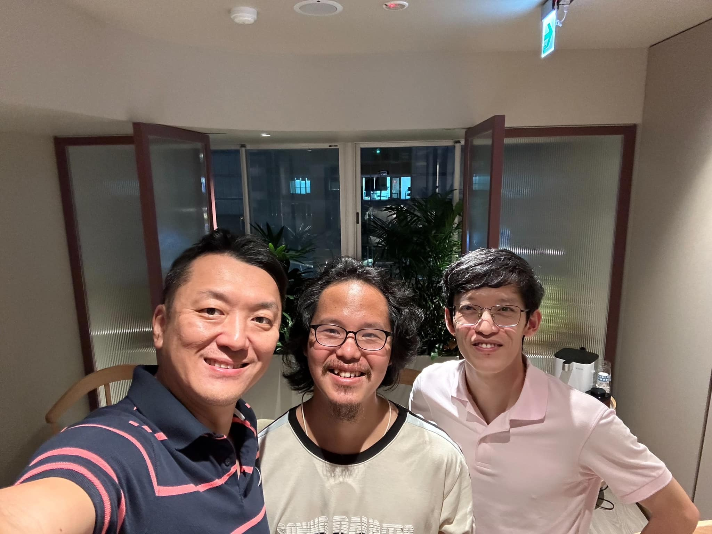
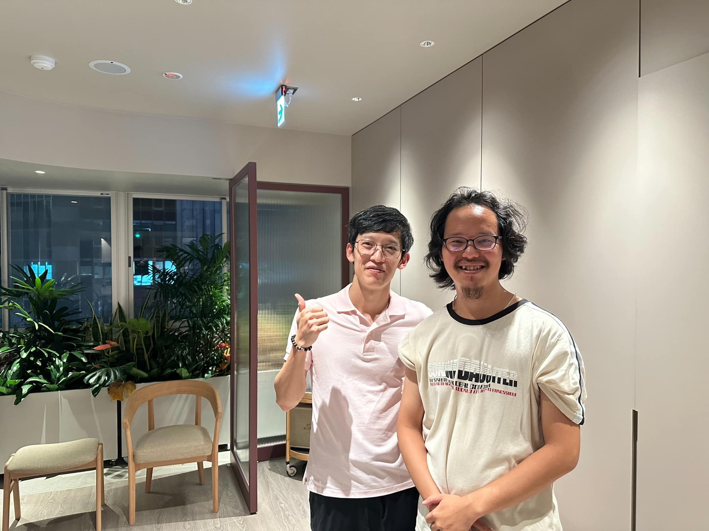
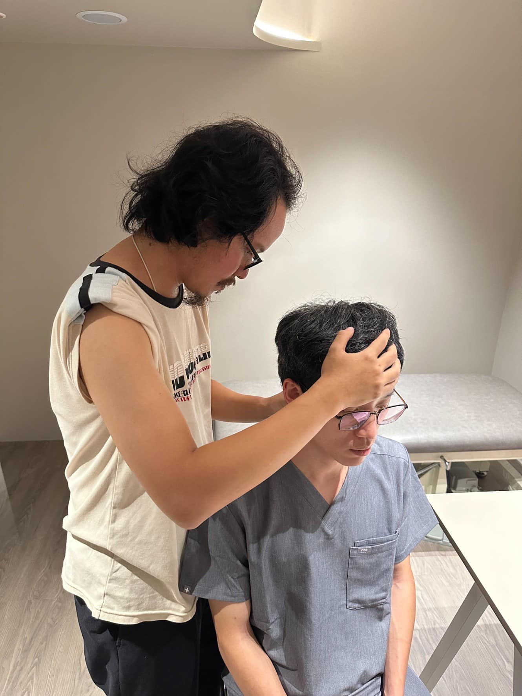
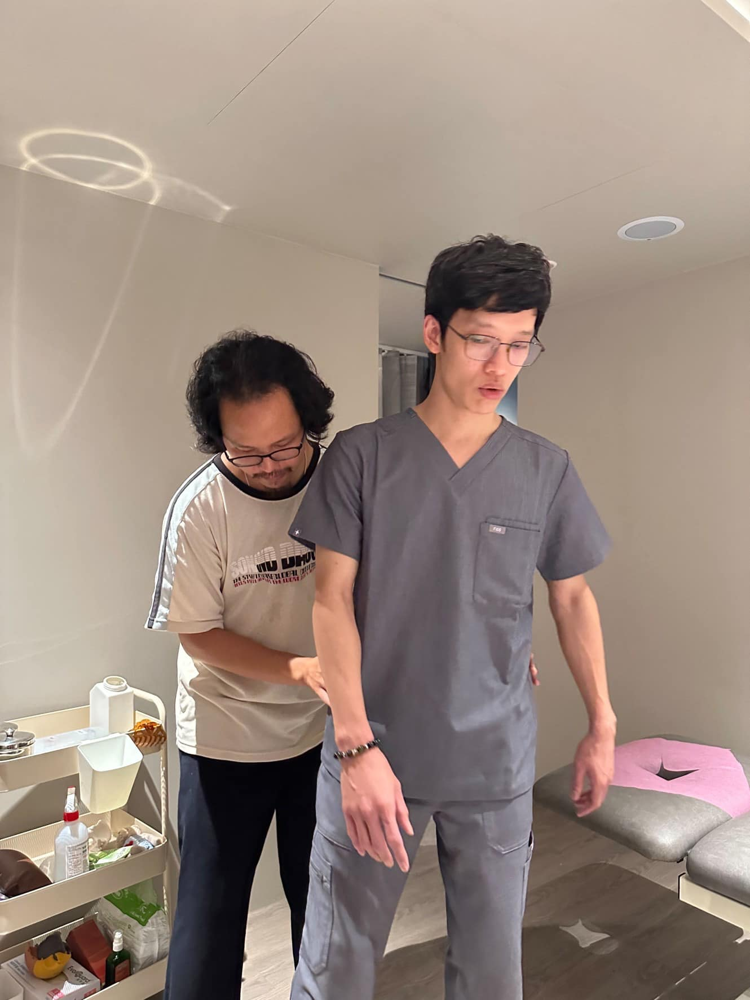
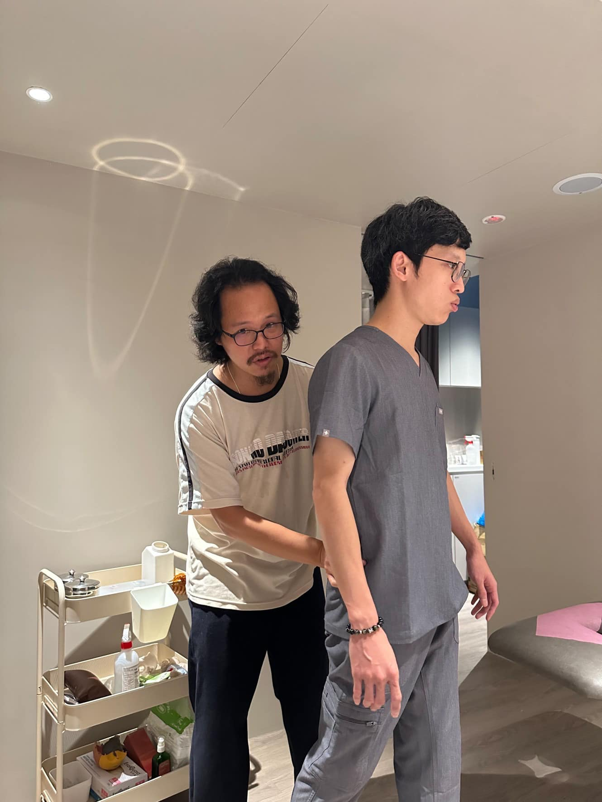

萬聖節🎃傷科徒手技術交流
萬聖節🎃傷科徒手技術交流
非常高興廖敏君 中醫師在北上參加研討會的課後來到太初，分享並交流雙方使用傷科手法治療的心得！
學長是位非常樂於分享的人，直接分享了他最新的技術應用！三個人也聊了許多趣事🤓🤓
學習後，讓我在均抗手法的基礎上，又能將手法應用更開展了，實在非常開心！
兩位傷科徒手中醫師能處在相同頻率間彼此交流，教學相長，著實不容易，非常期待廖醫師接下來在太初的工作坊，相信參與者都能獲得啟發，收穫滿滿🤩🤩🤩




